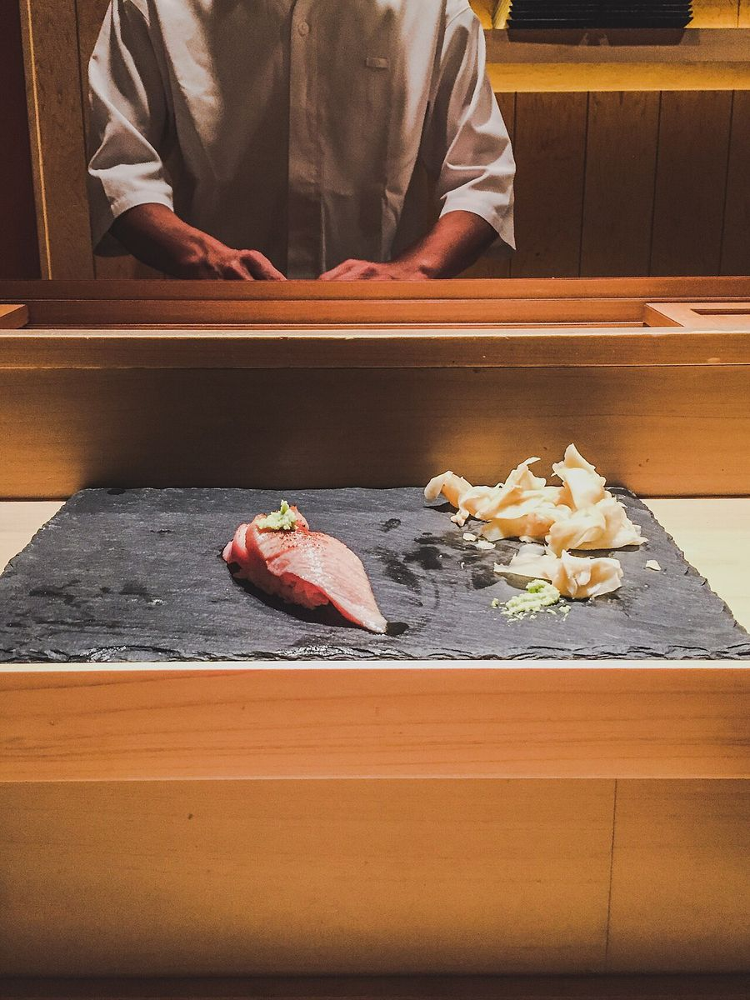
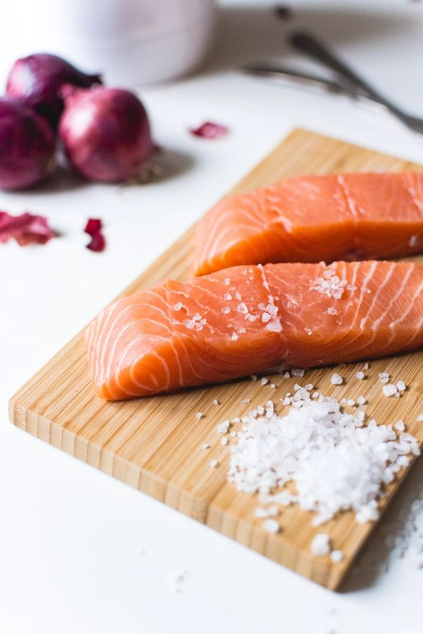
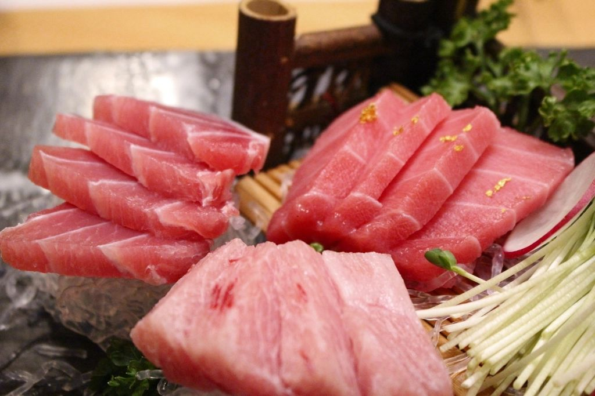
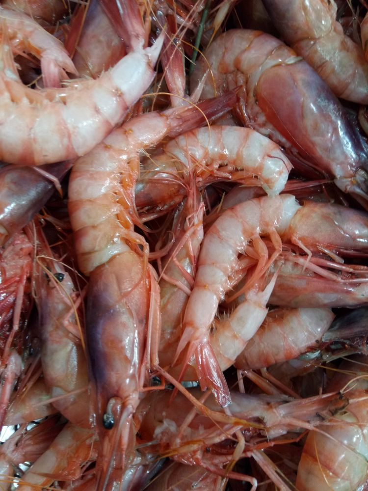
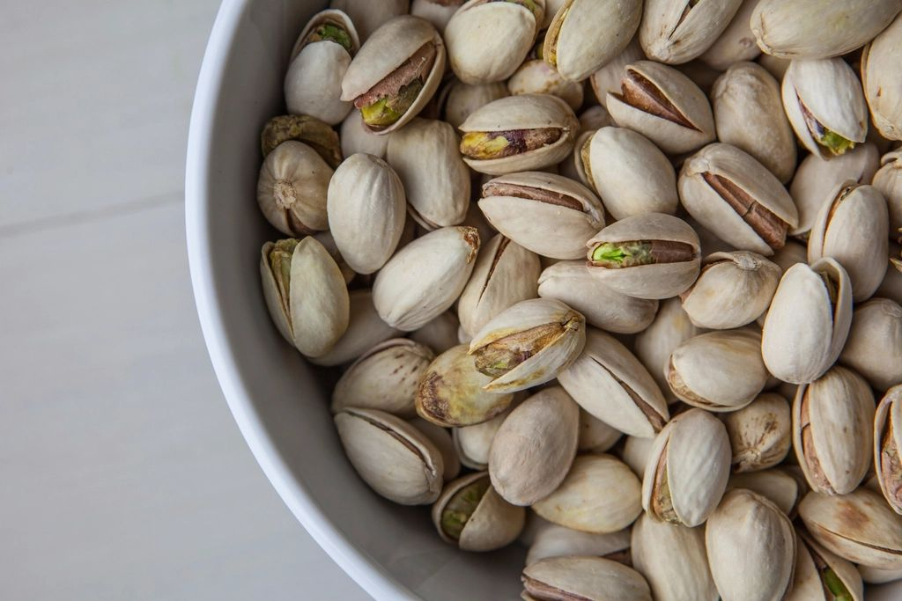
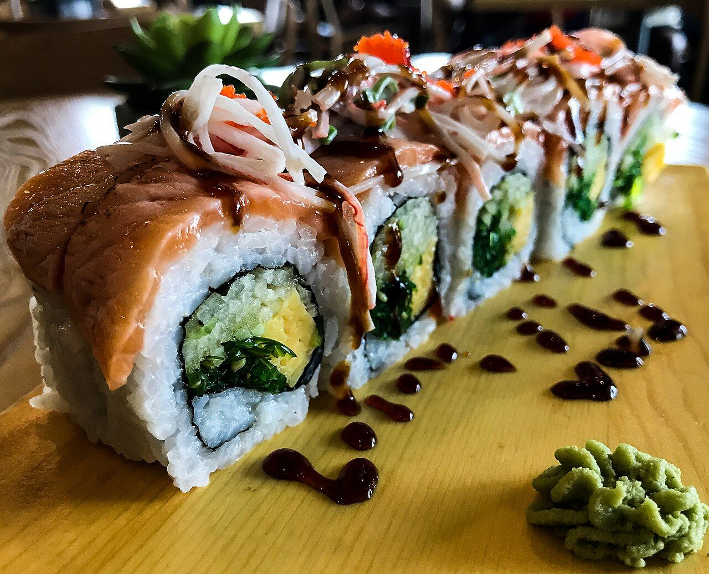
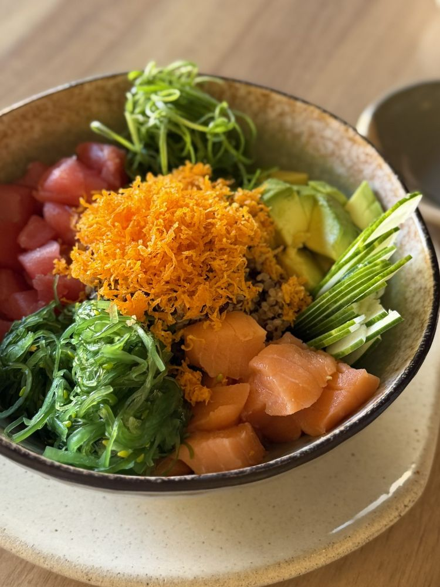

#ItalianSushi · Bitetto
Crediti foto
Le foto del sito vengono da archivi con licenza libera. Sono state ridimensionate e ritagliate per il sito; quelle con licenza CC BY-SA restano sotto la stessa licenza.

Dieglop · CC BY-SA 4.0 · Home, apertura

Jakub Kapusnak · CC0 1.0 (pubblico dominio) · Home, La materia prima

autore non indicato · CC0 1.0 (pubblico dominio) · Home, La materia prima

blue and red shrimp, crevette rouge, gamba rosada
Karim Haddad · CC BY 4.0 · Home, La materia prima

Free shelled pistachio nuts bowl
autore non indicato · CC0 1.0 (pubblico dominio) · Home, La materia prima

FranHogan · CC BY-SA 4.0 · Home, I roll che ci chiedete di più

Orianna Radomile · CC0 1.0 (pubblico dominio) · Home, Componi la tua poke